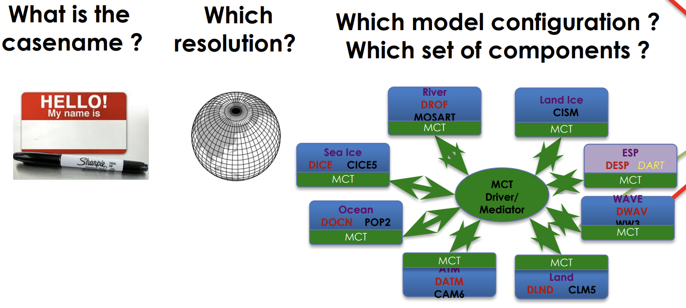
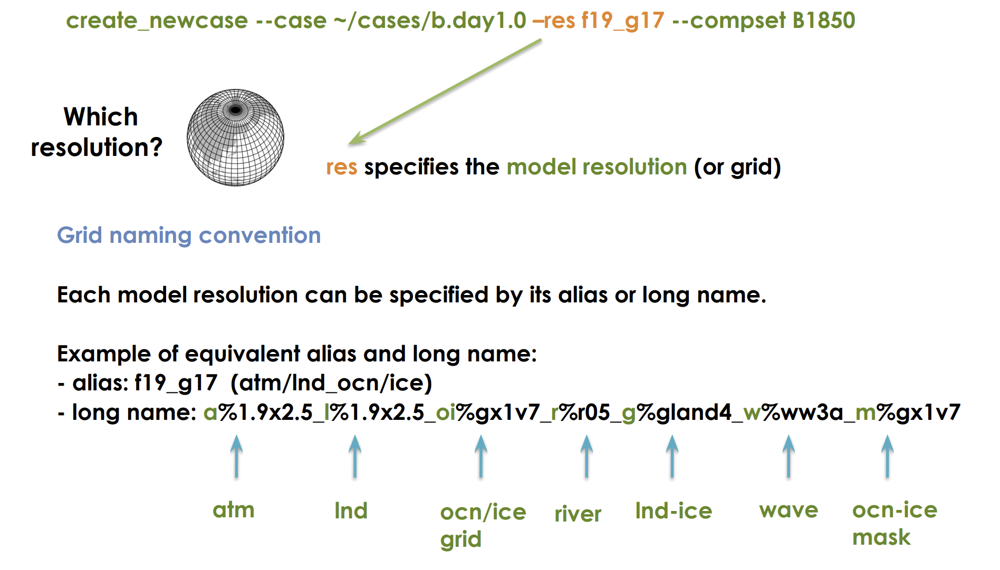

CESM Quickstart
Overview
Teaching: 0 min
Exercises: 0 minQuestions
How do I setup and run the CESM?
Objectives
You have now downloaded all the model components and the CIME workflow. Let’s take a look:
From your /glade/work/username/cesm2.1.1 directory, see what is there.
$ ls
What was added after running
manage_externals
Organization of the CESM Directory
CESM has a set of keywords that refer to specific directories, they are:
SRCROOT- Path to your CESM code; containsCIMEROOTCIMEROOT- Path of your CIME directory which is sub-directory underSRCROOTCASEROOT- Path to your case directoriesOBJROOT- Path to your build directoryEXEROOT- Path to your run directoryDOUT_S_ROOT- Path to your archived data directory
Find your SRCROOT and CIMEROOT
Your SRCROOT and CIMEROOT exist after downloading the CESM. What are the exact paths for you?
CIMEROOT
The cime subdirectory contains a subdirectory called scripts. This is the directory we will use initially for setting up the model.
Change into this subdirectory and take a look.
$ cd cime/scripts
$ ls
The final one-time step is to create a directory called cases in your home directory.
$ mkdir ~/cases
The cases directory (also called your CASEROOT) will contain all the source code and configuration files for your model experiments.
Why do you think we would put something like this in our home directory?
Model Quickstart
Above were the one-time setup setps, now we move on to the steps you will do everytime to setup a new model experiment and run it.
Go into the scripts subdirectory in your CIMEROOT
$ cd /glade/work/kpegion/cesm2.1.1/cime/scripts
Create a new case
$ ./create_newcase --cases ~/cases/b.day1.0 --res f19_g17 --compset B1850 --project UGMU0032
This created a new subdirectory for your new case. Change to that directory.
$ cd ~/cases/b.day1.0
Setup the case
$ ./case_setup
Build the executable (this will take while)
$ qcmd -- ./case.build
This will take awhile. While the model is compiling, we will talk about what the create_newcase command did.
Potential Errors
Some users received an error indicating that their account was overspent or expired. This happened to users who already had a NCAR account associated with a project charge code that was no longer available. To resolve this, set the
PBS_ACCOUNTenvironment variable to a valid charge code for this class.$ export PBS_ACCOUNT=UGMU0032This setting will go away after you logout, so you will need to set it everytime for the correct project charge code associated with the project you are working on.
What did we just do?
create_newcase takes 3 arguments

Case Name (case)
This is the name and location of your experiment
- Can be anything you want
- It is a good idea to make it descriptive so you can distinguish different cases
- NCAR has reccomended naming conventions
This experiment is called b.day1.0 and it is located in my cases directory in my home directory.
Resoultion (res)
Specifies the resolution and grid of the model components. Each model resolution can be specified by its alias or long name.

How to know what grids are available? There’s a tool
$ CIMEROOT/scripts/query_config --grids --long
and a website
Understanding grids
The resolution f09_g17 is the standard resolution used for CMIP simulations with the CESM. What is the resolution of the atmosphere/land and ocean in this model?
Component Set (compset)
Sets which versions and component models are active vs. inactive and what forcings are used.
The first letter B in this compset indicate that all components are active. The 1850 means that the 1850 greenhouse gas forcings will be used.
How do I know what the different compsets are?
There’s a tool
$ CIMEROOT/scripts/query_config --compsets
and a website
Some Common Compset Starting Characters
Ball components are activeFatmosphere is active; ocean and ice are inactiveIland is activeGocean is activeAaquaplaned (atm with no land)
Certain compsets are scientifically validated meaning they have been extensively tested.
You can create your own compsets.
It is strongly suggested that you start developing any experiments from a scientifically validated compset, then make changes.
The selected compset determines which grids are available.
The CASEROOT directory
This was created when you ran create_newcase. Change directory and take a look at it:
$ cd ~/b.day1.0
$ ls
It contains a bunch of .xml files which are configuration files. We will learn how to modify them next week.
What happened when we ran case.setup?
- Your RUNDIR and EXEROOT directories were created
- A bunch of user.nl.xxx files were created (these are namelist files that provide configuraiton details to different component models)
- Created the
case.runandcase.st_archivescripts - Create a CaseDocs directory
What happened when we ran case.build?
- Checked that all the input data was available
- Created the namelists from the user specified ones above
- Compiled the model
How can I find out what my CASEROOT, CIMEROOT, etc. are if I forget?
$ ./xmlquery RUNDIR,EXEROOT,CASEROOT,CIMEROOT
Now what?
If your build has completed, then you can submit your model run to the queue.
$ ./case.submit
You can see that is is in the queue, using
$ qstat -u username
What do we see regarding the model run in the queue?
You can logout now. While we are away, our model will run. We will return next week to take a look!
Key Points